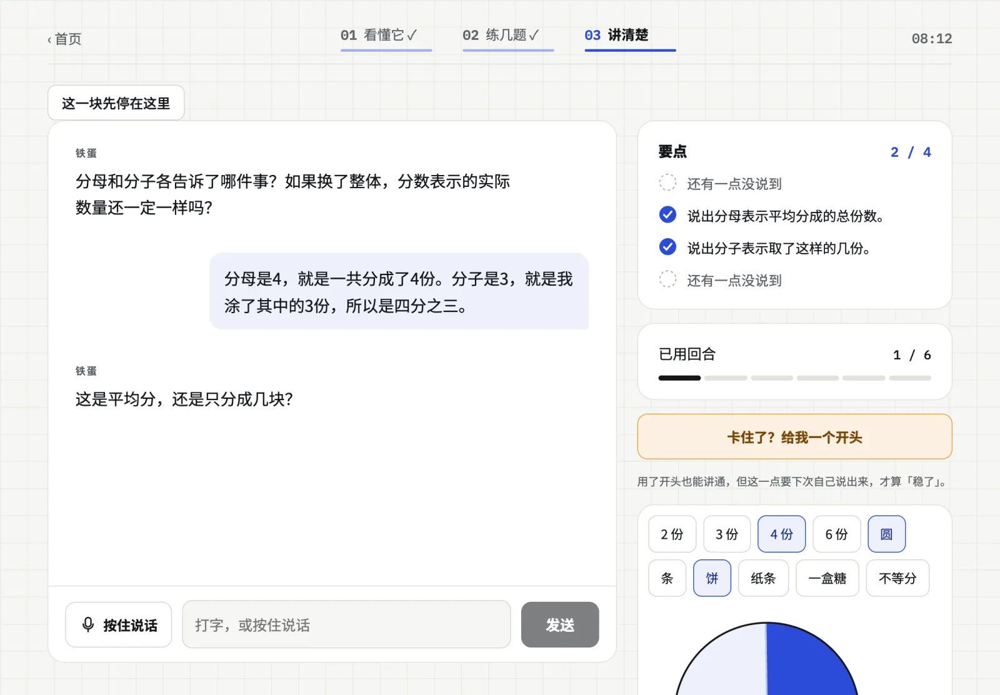
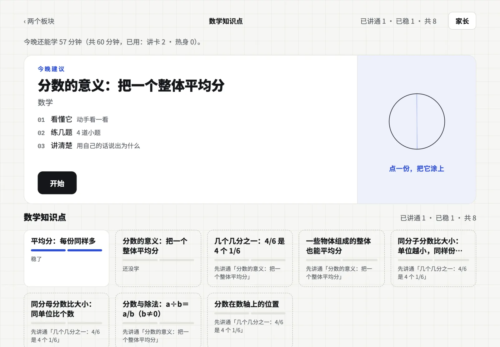
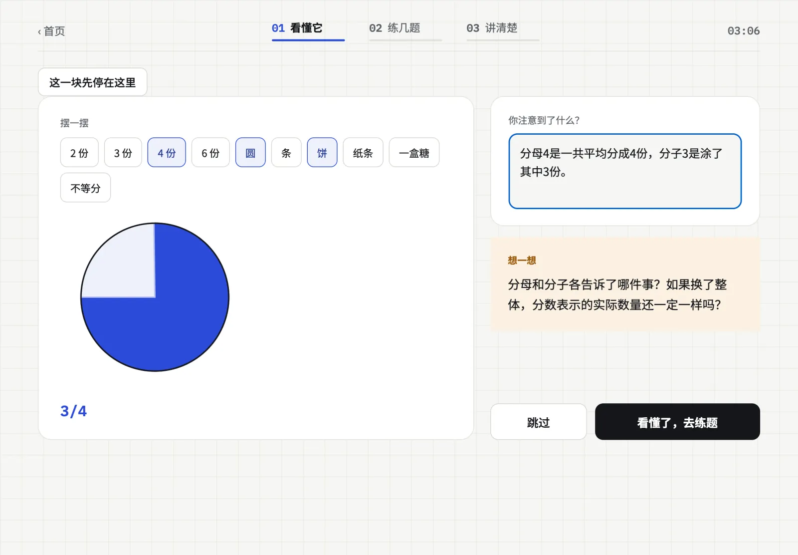
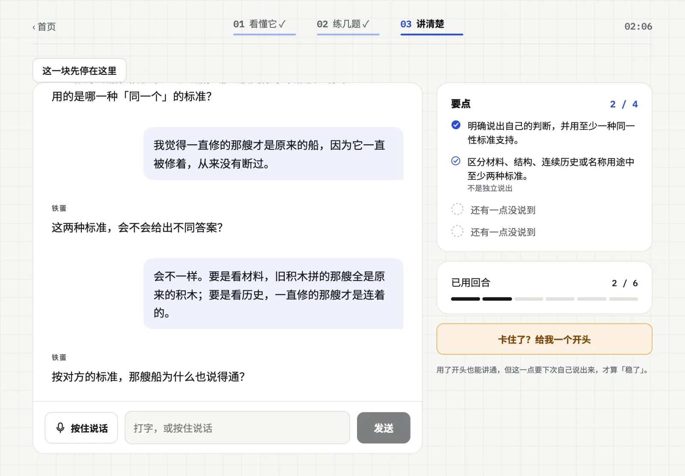
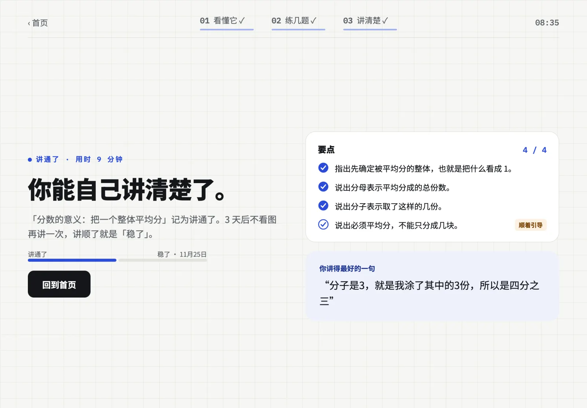
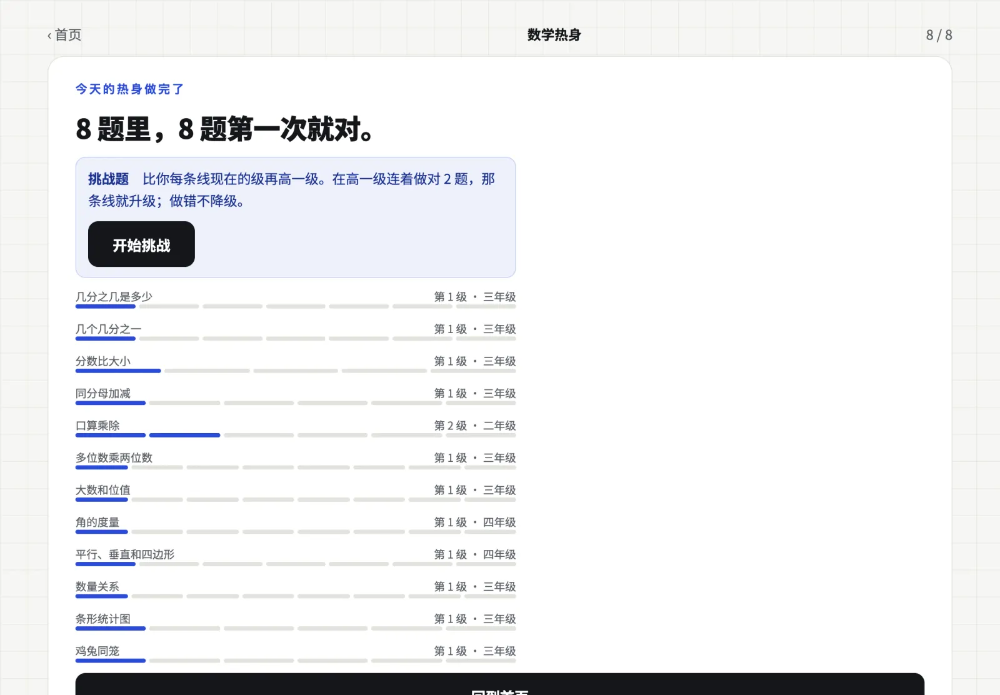
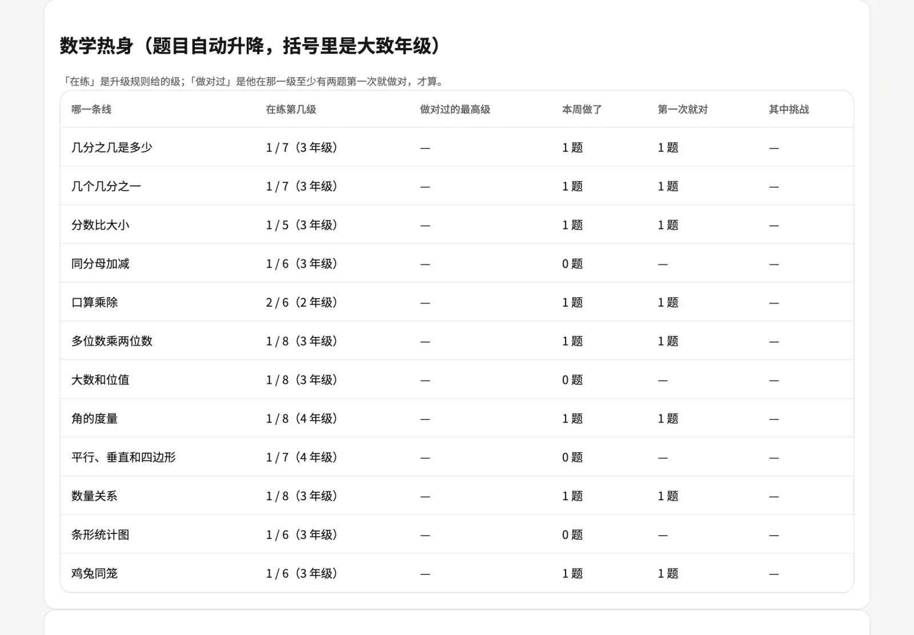

积木讲通Explain It
给儿子积木的 iPad 学习工具，每天晚上二三十分钟数学，十五分钟以上哲学。每一块知识都走三步：看懂它、练几题、讲清楚。最后一步不是 AI 讲给他听，而是他讲给 AI 听：铁蛋是一个有点憨、又特别爱追问“为什么呀”的机器人同学，只有被讲明白了才会点头。
An iPad tool for my son: understand it, practise it, then explain it in his own words to 铁蛋, an AI classmate who keeps asking why.

- 用的人
- 积木一个人，四年级
- 每天
- 数学 20–30 分钟，哲学至少 15 分钟
- 三步
- 看懂它 → 练几题 → 讲清楚
- AI
- 铁蛋负责追问，另一个模型判断要点讲到没有
一块知识怎么走How one card goes
- 看懂它先动手：把一个饼平均分成四份，涂上三份，写下你注意到了什么。
- 练几题四道小题，代码判对错，不麻烦 AI。
- 讲清楚用自己的话讲给铁蛋听。右边列着这一块要讲到的几个要点，讲到一个亮一个。
- 过几天再讲一次讲通了先记“讲通”，三天后不看图再讲顺一次，才算“稳了”。不会因为哪天没讲好就降级。
长什么样What it looks like






截图来自本机演示：回答是我们输入的示例，铁蛋用的是不联网的模拟模式。 Screenshots are a local demo with sample answers and a simulated 铁蛋.
为什么做Why I made it
这些年当老师，对我帮助最大的一件事是：备课就是先学，再一遍遍重复，最后讲出来。讲给别人听的时候，才会发现“哦，有一个点我其实没想明白”。
十月初积木学勾股定理，我意识到他是真懂了，因为他能给我讲明白。后来他还要给小伙伴讲 Scratch 里两个角色之间的距离怎么算，自己写了一段提示词，请 AI“扮演一个非常有经验的小学老师”陪他备课。上场前他说：“哇，我第一次当老师，我有点紧张呀。”
我突然意识到，之前给积木设计的数学练习只停留在了练习阶段，没有走向“要把这个东西讲明白”。……就是需要让他给 AI 讲明白，而不是单纯地只让 AI 给他讲。
语音日记 · 2026.10.24
铁蛋最早出现在暑假的“哲学实验室”里，是一个隐藏模式，叫“教教铁蛋”：AI 扮演一个自信又有点憨的机器人学生，积木从答题的人变成教它的老师。你直接把答案灌给它，它会一直问“为什么呀”；只有被好问题启发，它才会真的进步。
我这学期一直跟学生讲，AI 应该是脚手架，不是外包大脑。给积木也一样：错了先给开头不给答案，铁蛋从来不说“你这个想法不对”。工具本身不重要，重要的是能不能让他自己往前多想一步。
从“过 / 不过”到一级一级Levels, not pass or fail
第一版上线后，我把积木的记录导出来看：二十多次讲解，一半以上被判“没通过”。可一条条读下去，他其实讲得很好，常常比卡片上要求的更深，只是没有按标准答案的路子走。他自己也抱怨，铁蛋有点傻，总揪着一些他听不懂的地方不放。
于是我把“过 / 不过”拆掉了。讲通之后不再降级，第一次就讲得很顺的直接记“稳了”，练过的题不再重复；铁蛋说的每一句固定话，都要经过几道代码检查，不许它编造“你已经说对了几点”，也不许它跑题。